CS 463G & CS 663
(Intro to) AI
Lecture 29: Convolutional Neural Networks
Fall 2026
Images as Inputs
A convolutional neural network (CNN) learns local patterns in grid-like data, including images.
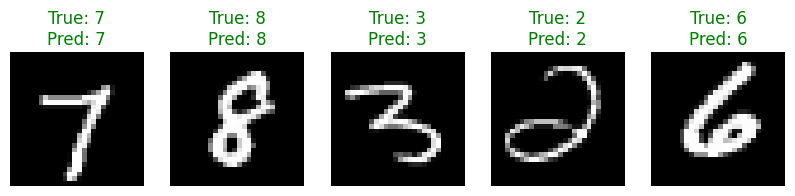
The MNIST dataset, short for Modified National Institute of Standards and Technology, contains handwritten digits.
- Each grayscale image has 28\times28 pixels, or brightness values.
- The target is one digit label from 0 to 9.
- Our notebook predicts one digit per image using ten output scores.
Local Connections and Shared Weights
A fully connected, or dense, layer connects every input value to every output unit. Flattening rearranges the pixels into a vector, without deleting their values.
CNNs build in two structural choices:
| Idea | Meaning for an image |
|---|---|
| Local connections | A unit examines a small neighboring patch of pixels. |
| Weight sharing | The same learned coefficients examine patches at different positions. |
A filter is a small array of weights. One 3\times3 grayscale filter has 9 weights and 1 bias, reused across the image.
Training learns these shared weights. Their gradient contributions accumulate across the positions where the filter operates.
Kernels, Patches, and Feature Maps
A kernel, also called a filter, is a small array of weights. A patch is the input window under it. A feature map records the resulting value at each position.
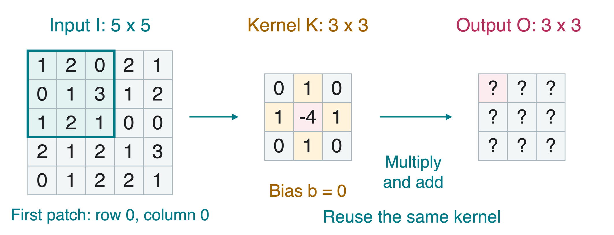
For this arithmetic example, fix the displayed kernel and use bias b=0. Slide it one pixel at a time, with no extra border pixels.
A Filter Moving Across the Image
At each position, multiply matching entries and add. We number rows and columns starting at 0.
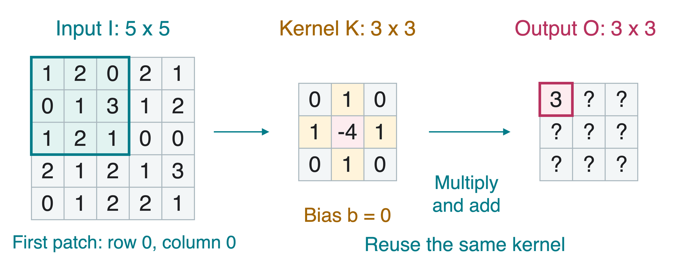
O_{0,0}=2+0+3+2-4\cdot1=3.
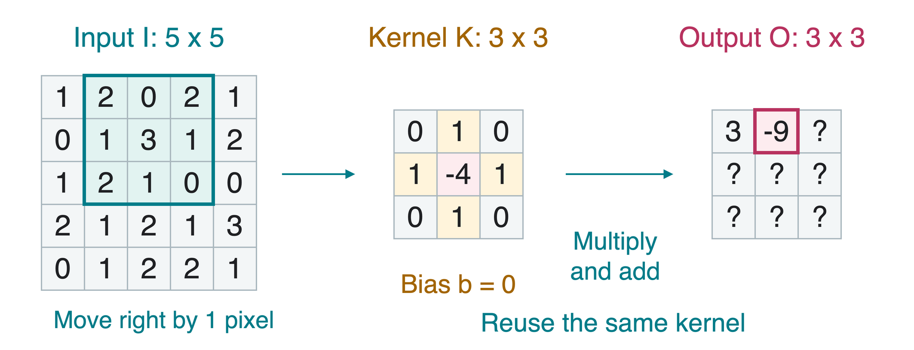
O_{0,1}=0+1+1+1-4\cdot3=-9.
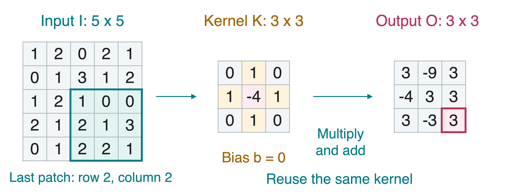
Repeat for every valid patch. The kernel coefficients stay the same.
The Convolution Rule
For one input channel, a square f\times f kernel, and one-pixel steps:
O_{i,j}=b+\sum_{u=0}^{f-1}\sum_{v=0}^{f-1} I_{i+u,j+v}K_{u,v}.
- I is the input, K the kernel, O the output map, and b a shared bias.
- (i,j) locates the patch’s top-left corner.
- (u,v) indexes an entry within the kernel, starting at (0,0).
The numerical example has f=3 and b=0.
Each output value is a small weighted sum. Backpropagation learns the kernel weights and bias just as it learns dense-layer parameters.
Stride and Padding
Stride s is the number of pixels moved per step. Padding p adds border values, here p rows or columns of zeros on every side.
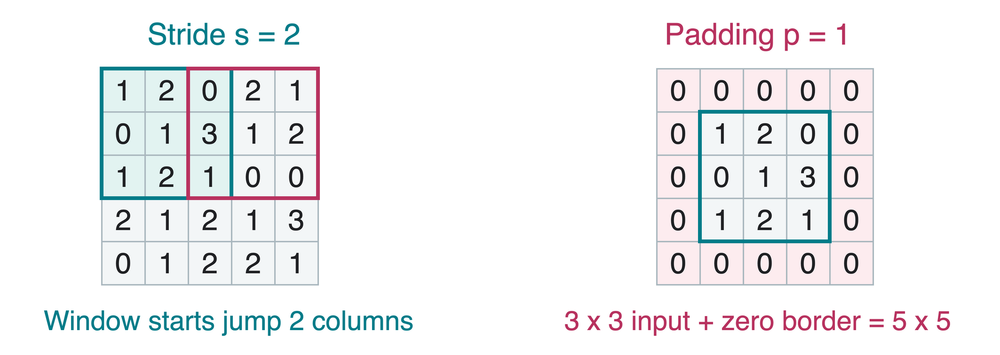
- Larger stride usually reduces the output’s height and width.
- Padding lets filters cover boundary pixels and can preserve spatial size.
Output Height and Width
For a square input with side n, kernel side f, stride s, and zero-padding width p, the output side is
n_{\mathrm{out}}=\left\lfloor\frac{n+2p-f}{s}\right\rfloor+1.
The floor \lfloor\cdot\rfloor rounds down. Count only full kernel windows.
| Input side n | Kernel side f | Stride s | Padding p | Output side |
|---|---|---|---|---|
| 5 | 3 | 1 | 0 | 3 |
| 5 | 3 | 2 | 0 | 2 |
| 28 | 3 | 1 | 1 | 28 |
Both notebook convolutions use the last row: spatial size stays 28\times28.
Channels and Multiple Filters
A channel is one value plane. Grayscale has one channel. RGB means red, green, blue, with three color channels.
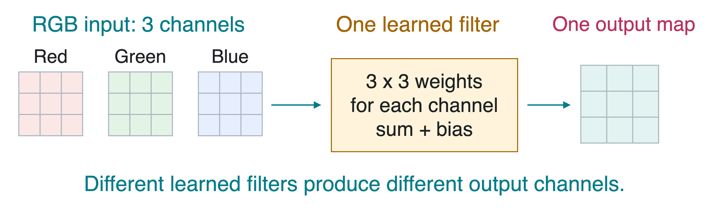
Each output channel uses its own learned filter, covering all input channels in an ordinary convolution.
For C_{\mathrm{in}} input channels and C_{\mathrm{out}} output channels, an f\times f layer has C_{\mathrm{out}}(C_{\mathrm{in}}f^2+1) parameters, including biases.
The notebook’s first layer has 32(1\cdot3^2+1)=320 parameters and produces 32 feature maps.
ReLU After Convolution
ReLU, the rectified linear unit, applies \max(0,z) separately to each entry z.
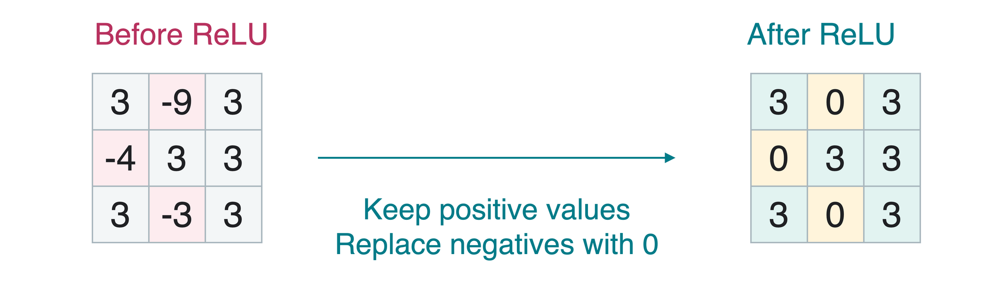
- Convolution computes weighted sums and biases.
- ReLU adds a nonlinear transformation. It introduces no learned weights.
- Applying ReLU leaves the tensor’s shape unchanged.
Pooling: A Smaller Feature Map
Pooling summarizes each small window. Max pooling keeps its largest value. Average pooling keeps its mean.
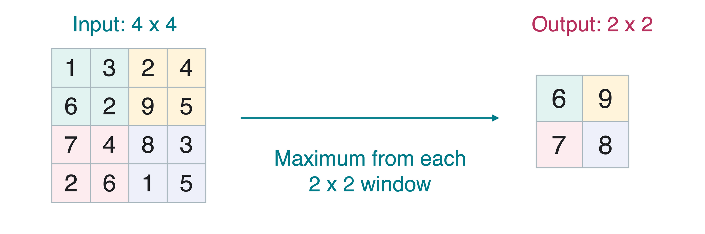
This separate example uses 2\times2 windows and stride 2, reducing 4\times4 to 2\times2. Pooling operates on each channel independently and learns no weights.
Pooling reduces spatial detail. It can soften sensitivity to small shifts, but a shifted image can still produce a different result.
Feature Maps to Class Scores
Flattening rearranges each image’s feature maps into a vector. A fully connected (FC) layer, also called a dense layer, combines its entries.
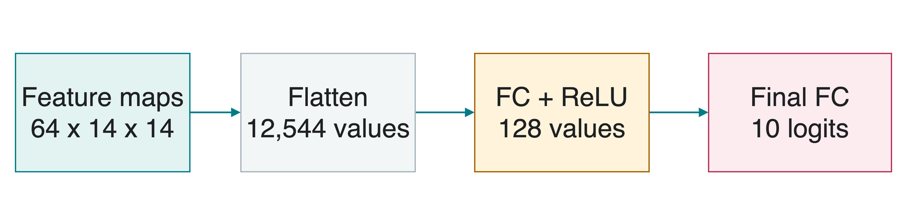
For the notebook, 64\cdot14\cdot14=12{,}544 values enter the first FC layer.
The final ten logits are raw scores, one per digit 0 through 9. The predicted digit is the index of the largest score, called argmax.
The Notebook’s CNN
Dropout randomly zeroes some hidden activations during training. Our model uses a probability of 0.5 before its final layer.
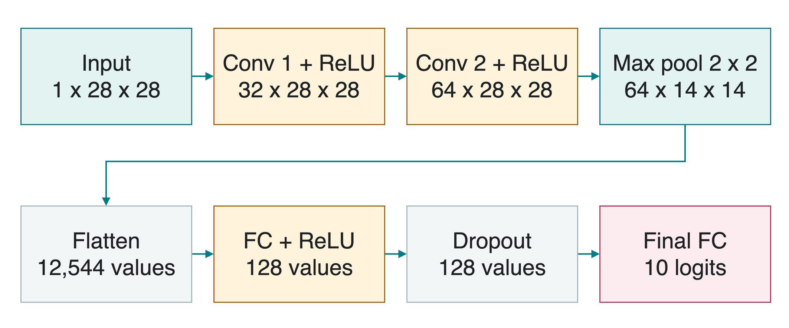
Shapes in the diagram describe one image. PyTorch batches use order (B,C,H,W): batch size, channels, height, width.
Training and Evaluation
Cross-entropy is a classification loss that penalizes low probability for the correct class. PyTorch’s CrossEntropyLoss takes raw logits and integer digit labels, handling the probability calculation internally.
| Control | What it changes |
|---|---|
model.train() |
Enables training behavior, including dropout. |
loss.backward() and optimizer.step() |
Compute gradients, then update parameters. |
model.eval() |
Disables dropout for ordinary prediction. |
torch.no_grad() |
Stops recording gradient history. It does not disable dropout. |
Use both evaluation mode and disabled gradient tracking for the notebook’s test pass. Keep test examples separate from model selection.
Quick Check
- Does moving a trained kernel to another patch create new weights?
- A 28\times28 input uses a 3\times3 kernel, stride 1, padding 0. What is the output side?
- Does
torch.no_grad()switch off dropout?
1. No. Every position reuses the same learned weights and bias.
2. 26. (28-3)/1+1=26. Adding padding 1 would preserve side 28.
3. No. model.eval() controls dropout. Gradient tracking is a separate setting.
Takeaways
- Convolution combines local connections with shared learned weights.
- A feature map records one filter’s response across positions.
- Stride and padding determine output height and width.
- Different output channels use different filters.
- ReLU adds nonlinearity. Pooling reduces spatial resolution.
- The classifier maps the resulting features to class scores.
Track the shape after each layer. A change to convolution or pooling can change the required FC input size.
CNN Notebook and Homework 5
Follow the same one-digit classifier:
- Match every layer to the shape diagram.
- Train the shared filters and the dense layers.
- Evaluate on held-out images and inspect mistakes.